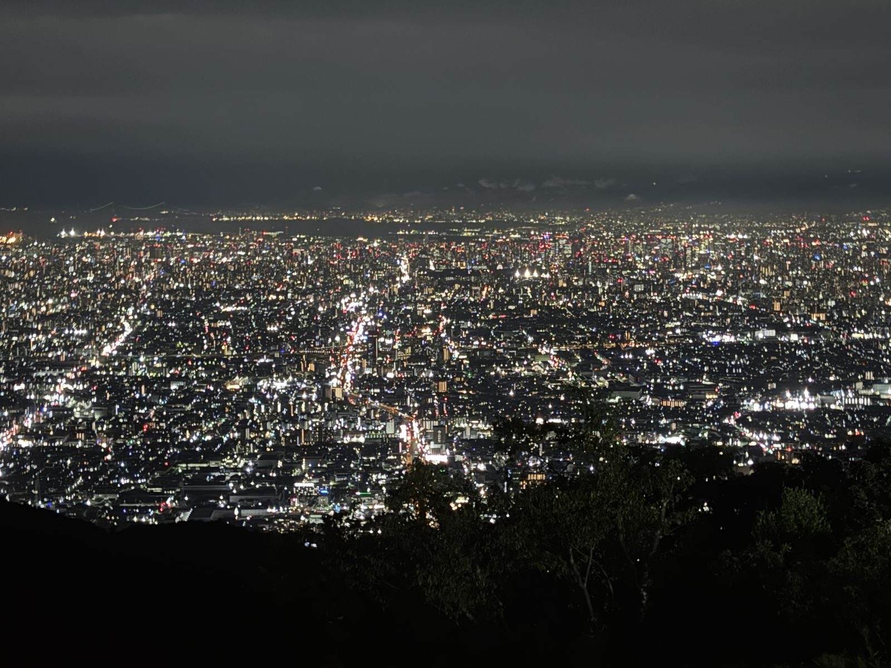
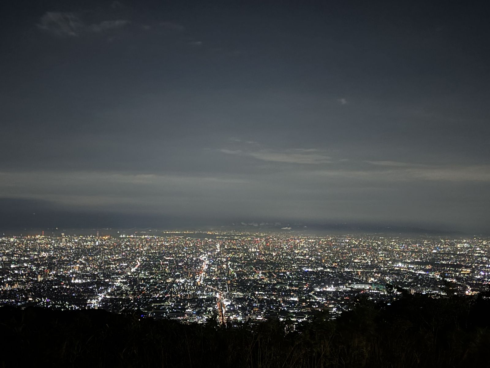
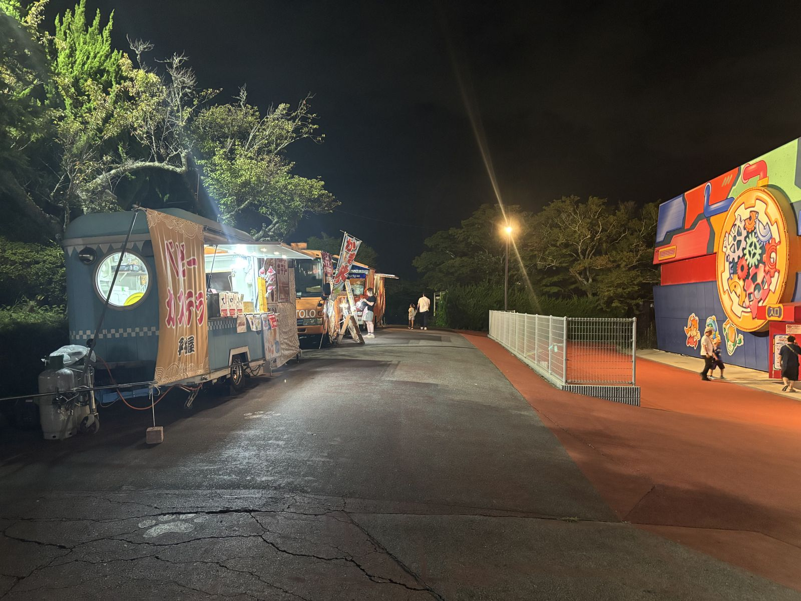
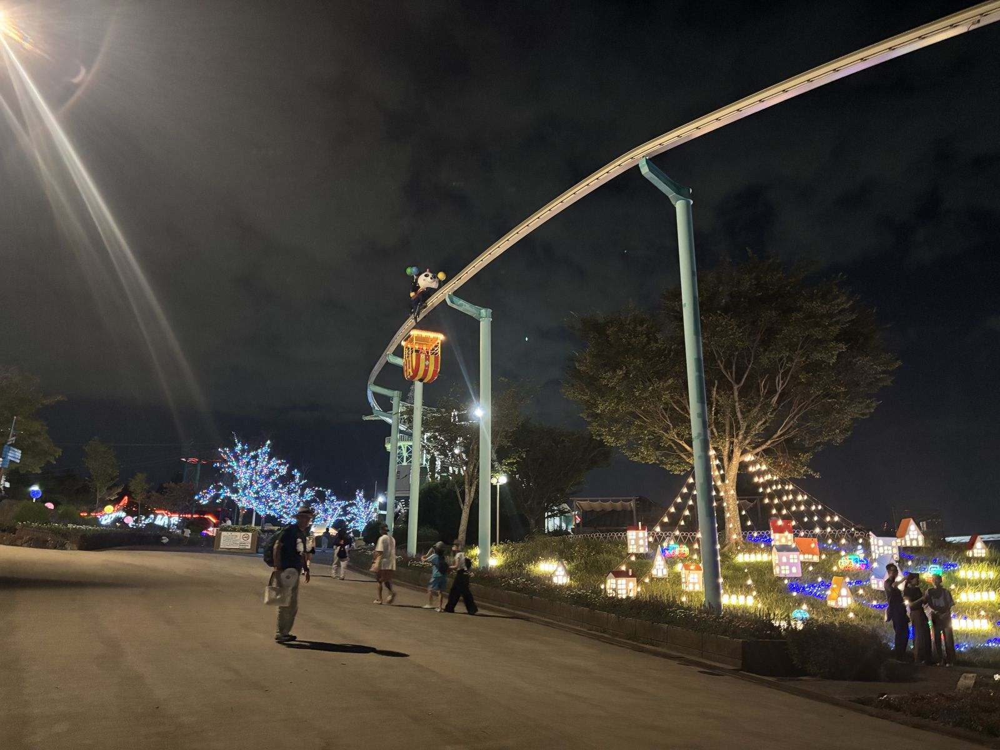

生駒山上遊園地・星の広場展望デッキ
The Star Plaza observation deck won a Cool Japan Award in 2019, and it earns it: on a clear night you can pick out Abeno Harukas and Osaka Castle across the basin below, tiny points of light against the dark. This is tonight's high point — literally and otherwise.


Beyond the view, the park itself is worth wandering — food stalls, an illuminated garden of miniature lit-up houses, and rides threading through the trees against the night sky.

